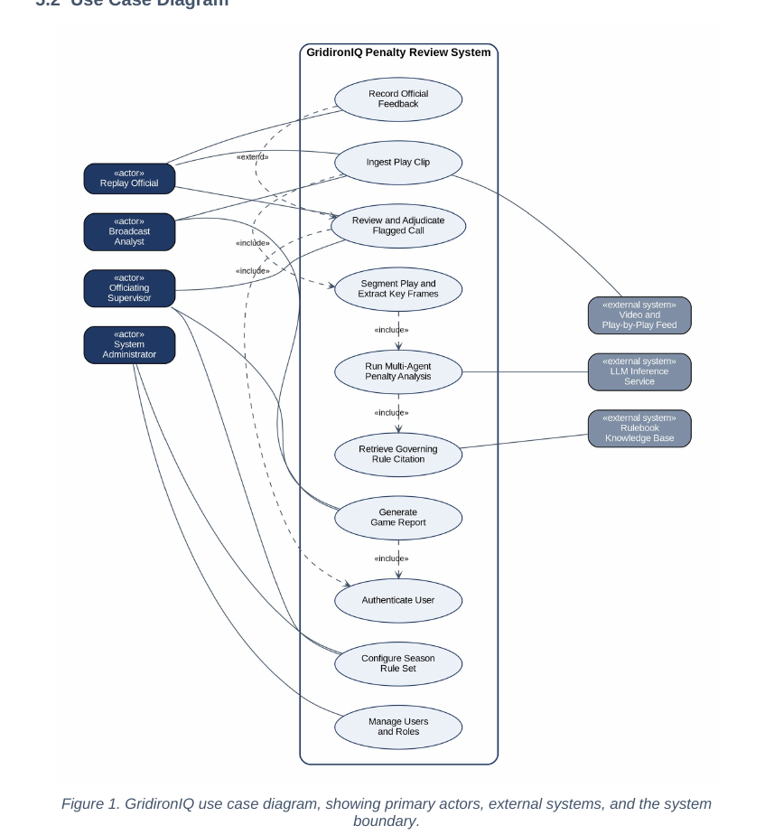

In-major & personal work
Projects
Work that reflects my Artificial Intelligence and Advancing Computer Science degrees. Each entry notes the program objectives it supports.

CSC318 · Software Engineering · Final Project
GridironIQ — Software Requirements Specification
A full SRS for the FlagAI/GridironIQ rule engine, written solo: project overview, scope and objectives, eleven numbered functional requirements, six non-functional requirements (performance, reliability, usability, security, explainability, portability), a use case model with an expanded use case, a UML domain model and agent-subsystem class diagram, glossary, assumptions, and a requirements-traceability matrix. The document fixed the SIP311 scope — text play in, cited ruling out, LLM advisory only — and is the design baseline for the prototype.
img/mediacast-arch.png
Personal lab project
Hudson Mediacast Pipeline
A FastAPI sidecar that turns Splunk security data into spoken SOC briefings: Splunk search results are summarized by Claude and voiced by ElevenLabs through a /briefing endpoint. Phase 1 (static media Splunk app) and Phase 2 (sidecar) are established; Phase 3 adds a /video_briefing endpoint.
img/csc382-tests.png
CSC382 · Data Structures & Algorithms
C++ Data Structures Labs
Binary search tree and self-balancing AVL tree with a 70-assertion test suite; hash table implementation; a comparative sorting project; and a doubly linked list used to model browser navigation (NavLink). Emphasis on object-oriented design, complexity analysis, and test-first verification.
More coming
Secure Coding (CSC442) and AI-major course projects will be added here as they are completed, each tagged with the objectives it supports.